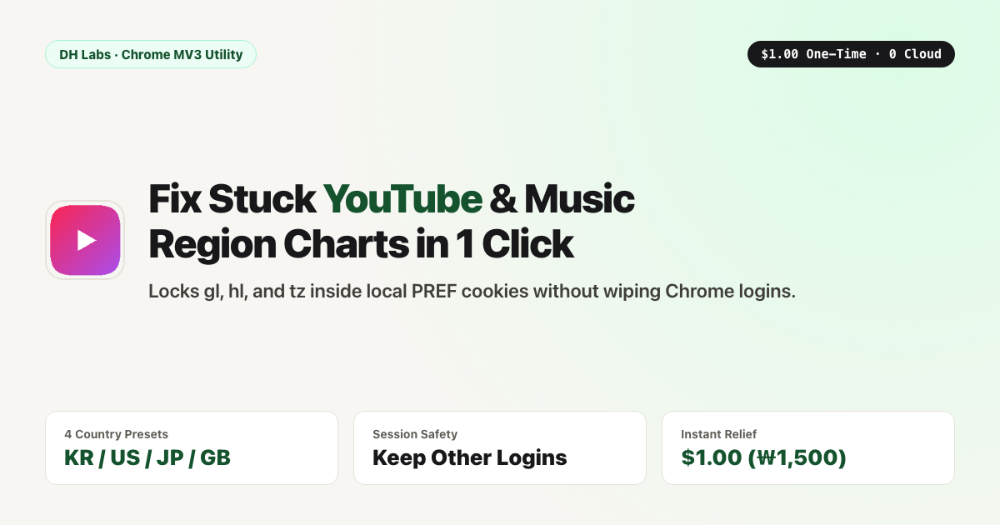
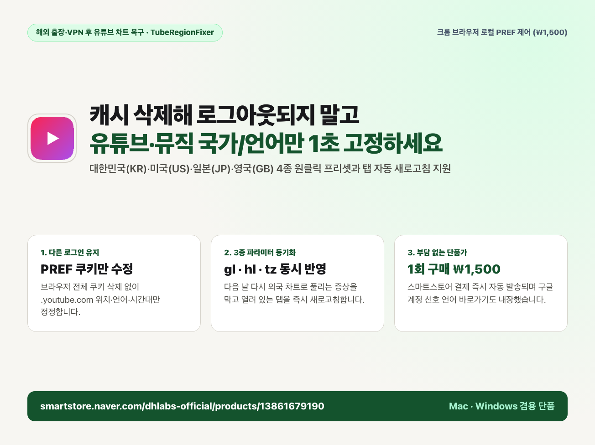
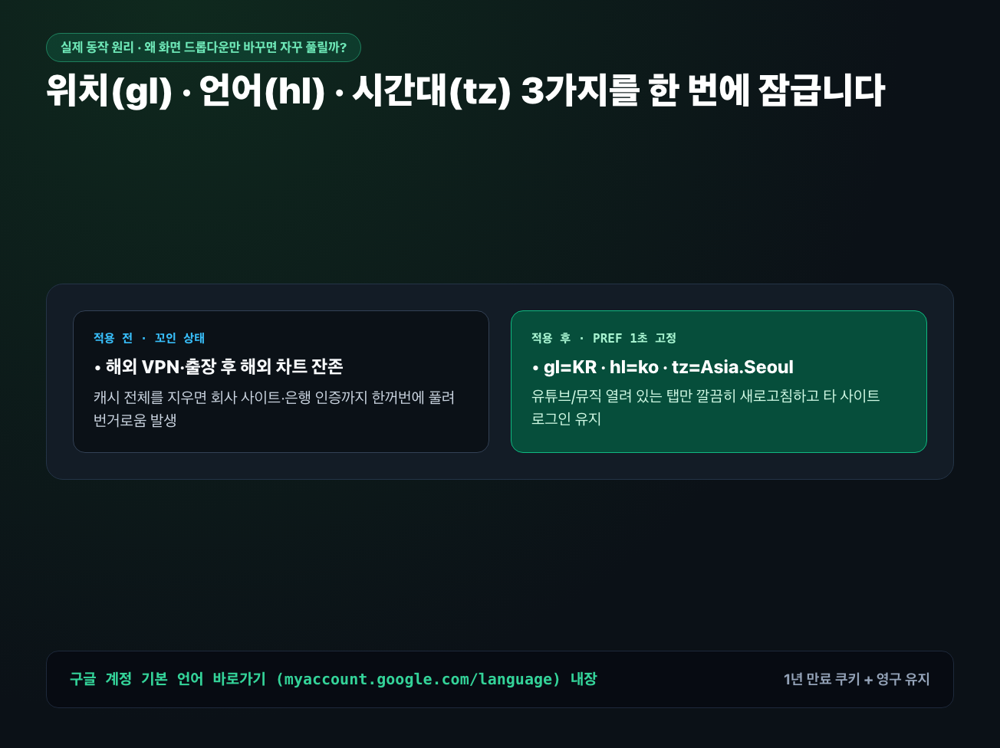
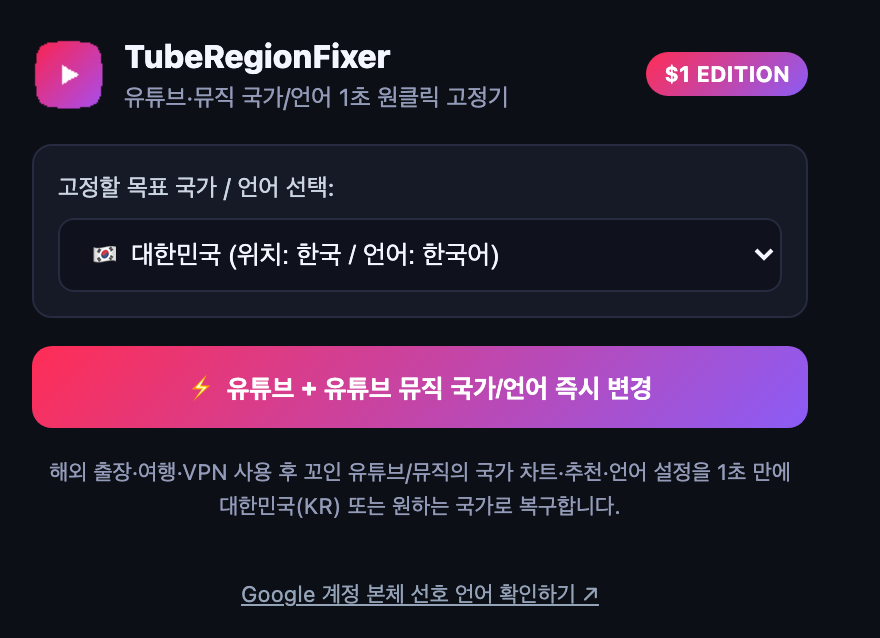

VPN 끄고 귀국했는데
아직도 외국 차트라면
유튜브 PREF만 1초 복구.
크롬 캐시·쿠키를 전부 비우면 은행, 사내 그룹웨어, AI 툴까지 함께 로그아웃됩니다. TubeRegionFixer는 .youtube.com의 PREF 쿠키(gl · hl · tz)만 내 브라우저에서 정정하고 열린 탭을 바로 새로고침합니다.

TubeRegionFixer란 무엇인가요?
TubeRegionFixer(SKU TRF-1USD-V1)는 디에이치랩스(DH Labs)가 만든 1PC·1계정용 로컬 크롬 확장프로그램(MV3) 유틸리티 솔루션입니다. 단품 ₩1,500(글로벌 $1.00) 1회 결제로 해외 여행·출장·VPN 접속 이후 유튜브와 유튜브 뮤직 차트·언어가 외국에 고정됐을 때 1초 만에 복구합니다. 브라우저 내부에서 chrome.scripting.executeScript로 .youtube.com PREF 쿠키의 3종 키(gl·hl·tz)를 4종 국가 프리셋(KR·US·JP·GB) 중 하나로 동시에 기록하고(미열림 시 백그라운드 탭 3000ms 대기), 유효기간 365일(max-age=31536000) 저장 및 열린 탭 리로드 후 깔끔하게 종료됩니다.
gl · hl · tz 동시 기록(365일)
크롬 쿠키 전체 삭제 · 메뉴 토글과 무엇이 다른가요?
| 비교 항목 | 기존 수동 해결법 (캐시 삭제 / 화면 드롭다운) | TubeRegionFixer (로컬 크롬 MV3) |
|---|---|---|
| 다른 웹사이트 로그인 유지 | 쿠키 일괄 삭제 시 네이버·은행·업무 사이트 전부 재로그인 필요 | .youtube.com 도메인의 PREF 키만 정확히 수정해 타 사이트 영향 없음 |
| 위치(gl) · 언어(hl) · 시간대(tz) 정합성 | 웹페이지 우측 상단 위치 드롭다운은 재접속 시 풀리는 사례 잦음 | gl · hl · tz 3가지 파라미터를 한 번에 잠그고 열려 있는 탭 모두 새로고침 |
| Google 계정 본체 언어 연동 | 브라우저 쿠키와 구글 계정 선호 언어가 어긋나 언어만 원복됨 | 팝업 내 myaccount.google.com/language 바로가기 버튼 기본 포함 |
| 지원 프리셋 & 보안 구조 | 해외 차트 탐색 시마다 설정 화면을 여러 번 오감 | KR · US · JP · GB 4개국 프리셋, 외부 서버 통신 없이 로컬 1회 실행 후 종료 |
실제 팝업 화면과 작동 흐름은 어떻게 되나요?

1. 타 로그인 유지 + PREF만 즉시 정정 — 전체 캐시를 지울 필요가 없습니다.

2. gl · hl · tz 3종 파라미터 일괄 기록 — PREF 쿠키 유효기간을 365일로 맞춥니다.

3. 실제 크롬 팝업 UI — 국가 프리셋(KR·US·JP·GB) 선택 후 1클릭 적용과 구글 언어 바로가기를 한 화면에 담았습니다.
31초 핵심 요약 영상과 10초 설치 방법
어떻게 10초 만에 설치하고 적용하나요?
주문 즉시 전달되는 단품 ZIP 파일에는 Mac용(OneShot_Capsule_Launcher.command)과 Windows용(OneShot_Capsule_Launcher_Windows.bat) 실행 파일이 모두 들어 있어 비개발자도 금방 쓸 수 있습니다.
- 압축을 푼 뒤 OS에 맞는 런처 파일(
.command또는.bat)을 한 번 더블클릭해 로컬 1회 사용 봉인을 풉니다. - 크롬 주소창에
chrome://extensions를 입력해 우측 상단 개발자 모드를 켜고 폴더를 불러옵니다. - 우측 상단
TubeRegionFixer아이콘을 열어KR · US · JP · GB중 원하는 국가를 고른 다음 즉시 변경 버튼을 누르면 열린 유튜브·뮤직 탭이 즉시 새로고침됩니다.
공식 판매 채널 및 가격 안내
| 판매 채널 / SKU | 포함 구성 및 동작 범위 | 가격 | 바로가기 |
|---|---|---|---|
네이버 스마트스토어 (국내 공식)TRF-1USD-V1 |
TubeRegionFixer 크롬 MV3 단품 ZIP + Mac/Windows 1클릭 런처 + 한국어 사용 안내서 (1PC · 1계정 · 단 1회 실행) | ₩1,500 (단품 1회) |
스마트스토어 구매 → |
Gumroad Global Storetuberegionfixer |
Global Chrome MV3 ZIP + Mac/Windows local capsule launchers (gl/hl/tz KR·US·JP·GB presets, single-use session) |
$1.00 USD (One-Time) |
Gumroad Global → |
자주 묻는 질문 (FAQ)
Q1. 한국으로 복귀한 뒤 왜 유튜브 뮤직 차트만 계속 외국어로 나오나요?
브라우저에 저장된 .youtube.com의 PREF 쿠키 내부 값(gl 국가 코드, hl 인터페이스 언어, tz 시간대)이 이전 출장지나 VPN 서버 값으로 남아 있기 때문입니다. TubeRegionFixer는 이 세 값을 KR|ko|Asia.Seoul(또는 원하는 국가)로 한 번에 덮어쓰고 유효기간을 365일로 갱신합니다.
Q2. 다른 사이트나 기존 유튜브 로그인도 같이 풀리나요?
풀리지 않습니다. 크롬 전체 캐시를 지우지 않고 https://www.youtube.com/*과 https://music.youtube.com/* 탭 안에서 PREF 쿠키 문자열만 갱신하므로 로그인 세션과 다른 웹사이트 쿠키는 그대로 유지됩니다.
Q3. 1회 실행 후 확장프로그램이 닫히면 설정도 사라지나요?
아닙니다. 1PC · 1계정 보안 캡슐 규격에 따라 적용 완료 5초 뒤 확장프로그램은 자동으로 종료되어 브라우저를 무겁게 만들지 않지만, 기록된 .youtube.com PREF 쿠키 설정(365일)은 계정에 계속 유지됩니다. 미활성화·기술 결함 시 7일 이내 전액 환불 규정과 24시간 내 기술 지원도 함께 적용됩니다.